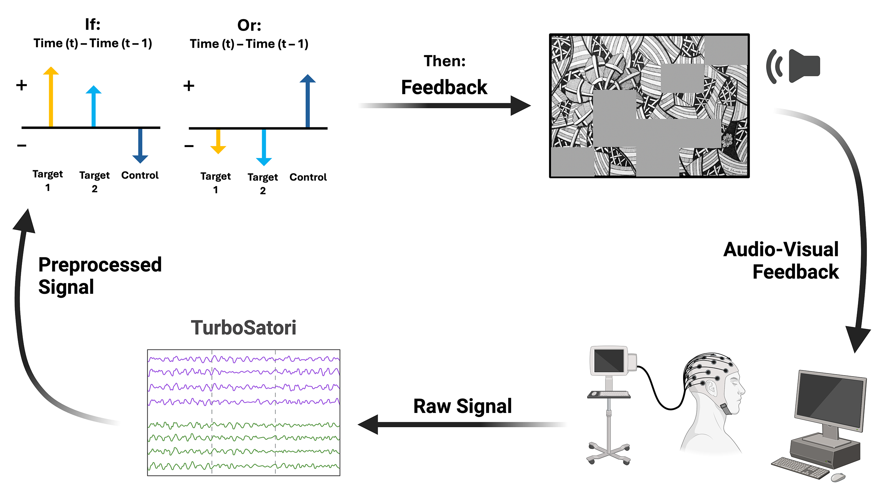
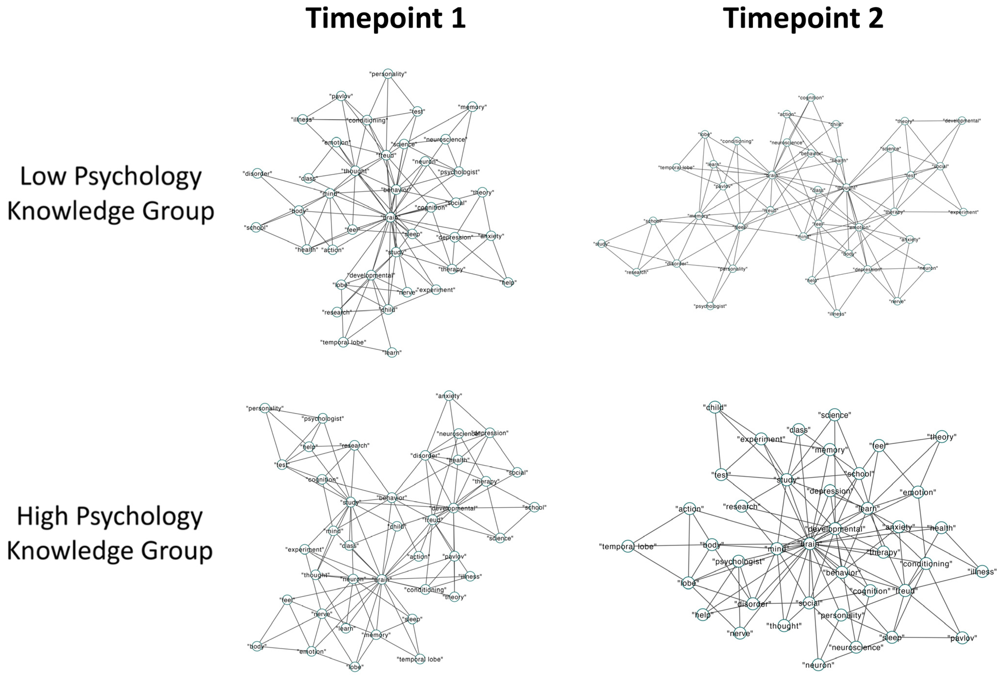
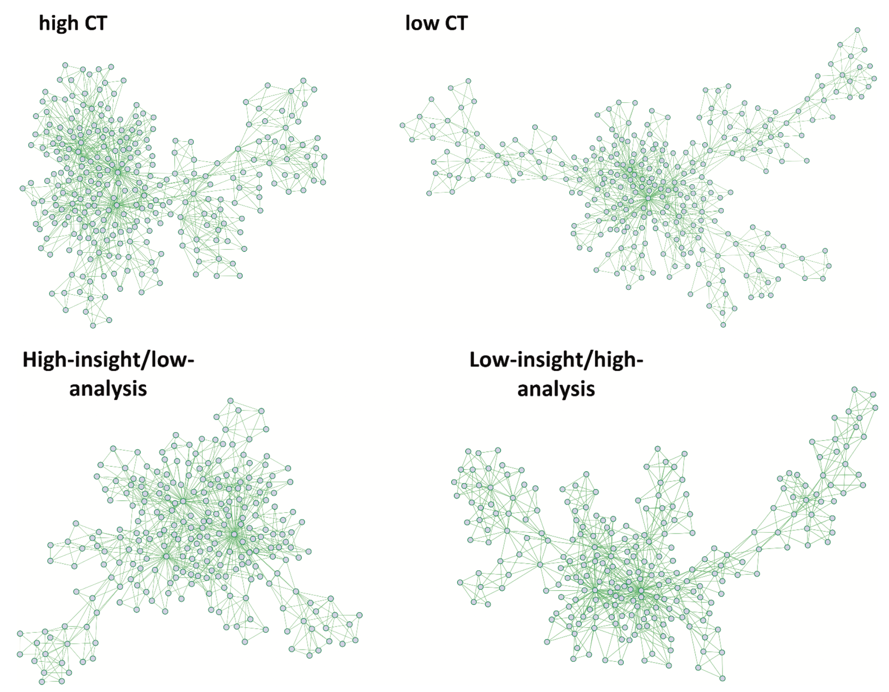
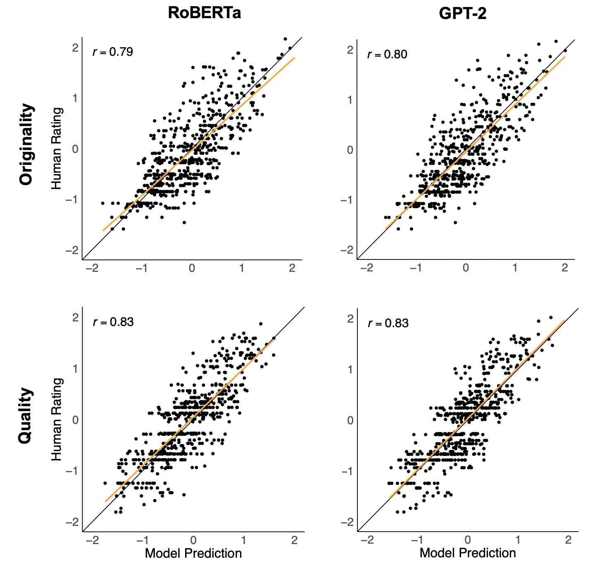

Simone Luchini
PhD Student

Hi, I am Simone! I study creativity in humans and artificial systems. My work intersects cognitive psychology, neuroscience, and artificial intelligence. I am currently a PhD student at Penn State University, working with Dr. Roger Beaty. I completed my BSc at The University of Westminster and my MSc at The University of Milano-Bicocca. I have also been a visiting student at the labs of Dr. Emmanuelle Volle at the Paris Brain Institute, and Dr. Bodong Chen at the University of Pennsylvania.
Learn About My Research
My research fits into three related categories. (1) Understanding the neural (brain) systems that support creative thinking, leveraging neuroimaging (e.g., fMRI, fNIRS) and neuromodulation techniques (e.g., neurofeedback, tDCS, tACS). (2) Defining the cognitive systems that underlie creativity, employing network science, factor analytic techniques, longitudinal analyses, and more. (3) Exploring how representations and creative behaviors of humans compare to those of AI (primarily Large Language Models), to develop artificial systems capable of human-like creativity. You can read about some selected projects from these lines of research below:
Neural Substrate of Creativity
This line of research investigates the neural underpinnings of creative thinking in humans. Studies leverage a variety of neuroimaging techniques, such as fMRI and fNIRS, often in combination with neuromodulatory techniques like neurofeedback or brain stimulation. I am particularly interested in tying the neural mechanisms that support creative thinking to specific cognitive processes, to shed light on the nature of creativity.
Cognitive Underpinnings of Creativity
This line of research investigates the cognitive underpinnings of creative thinking in humans. Studies leverage a variety of methodologies, such as network science, factor analytic techniques, and longitudinal studies. I am particularly interested in uncovering the role of associative memory processes on creativity, as well as tying apart the influences of spontaneous and goal-directed influences on creativity.
Creativity and AI
This line of research investigates the similarity and differences between creative behavior in humans and AI. Studies focus on modern AI systems, such as large language models and large multimodal models. I am particularly interested in exploring how creative idea evaluation in AI compares to that of humans, and in developing better AI idea evaluations.
April 2025
Enhancing Creativity with Covert Neurofeedback: Causal Evidence for Default-Executive Network Coupling in Creative Thinking

Luchini, S. A., Zhang, X., White, R. T., Lührs, M., Ramot, M., & Beaty, R. E. (2025). Enhancing creativity with covert neurofeedback: causal evidence for default-executive network coupling in creative thinking. Cerebral Cortex, 35(4), bhaf065.
Correlational evidence has linked creativity to coupling between the Default Mode Network (DMN) and Executive Control Network (ECN). In this study, we leveraged covert neurofeedback to endogenously modify functional connectivity between DMN and ECN without the participants' knowledge. We compared this to a control neurofeedback condition, entraining coupling between medial prefrontal cortex and supplementary motor area. Approximately 24 hours after neurofeedback, DMN-ECN neurofeedback led to increased coupling between these networks during a creative thinking task (generating creative object uses), extending to broader DMN regions. Behaviorally, we observed a double dissociation: the DMN-ECN neurofeedback increased idea originality, while the control neurofeedback improved go/no-go reaction times. We thus provide the first evidence that DMN-ECN coupling causally enhances creative performance.
Read more
Read more
May 2024
Mapping the Memory Structure of High-Knowledge Students: A Longitudinal Semantic Network Analysis

Luchini, S. A., Wang, S., Kenett, Y. N., & Beaty, R. E. (2024). Mapping the memory structure of high-knowledge students: A longitudinal semantic network analysis. Journal of Intelligence, 12(6), 56.
Code and data available here.
Code and data available here.
In this paper we explored the relationship between semantic network and learning across two studies in undergraduate students enrolled in an introductory psychology course. We administered a cumulative multiple-choice test of psychology knowledge and estimated semantic networks across two domains: domain-specific (psychology) and domain-general (animals). Based on performance on the psychology test, we categorized students into a high-knowledge or low-knowledge group and compared their semantic networks. We found that the high-knowledge group had semantic networks that were more clustered, with shorter distances between concepts compared to the low-knowledge group. We also found the semantic networks of high-knowledge students became more interconnected over time. Successful learners show a distinct semantic network—characterized by high connectivity and short path distances between concepts—both domain-general and domain-specific, highlighting the utility of cognitive network science for studying variation in student learning.
Read more
Read more
June 2023
Convergent thinking and insight problem solving relate to semantic memory network structure

Luchini, S., Kenett, Y. N., Zeitlen, D. C., Christensen, A. P., Ellis, D. M., Brewer, G. A., & Beaty, R. E. (2023). Convergent thinking and insight problem solving relate to semantic memory network structure. Thinking Skills and Creativity, 48, 101277.
Code and data available here.
Code and data available here.
The associative theory of creativity holds that creative thinking involves connecting remote concepts in semantic memory, yet, research has overlooked its applicability to convergent thinking and insight. Convergent thinking problems can be solved with insight (the sudden "aha" experience) or analysis (deliberately and incrementally working towards the solution). In this work, we used network science to compare semantic network structure across two grouping variables: 1) convergent thinking ability (i.e., problem accuracy), and 2) the tendency to solve problems with insight or analysis. Our findings show that convergent thinking ability is linked to flexible and interconnected semantic networks—with short paths and many connections between concepts. Moreover, participants who primarily solved problems with insight showed shorter average path distances between concepts, even after controlling for accuracy. Our results extend the literature on semantic memory and creativity by linking the organization of semantic memory to convergent thinking and insight.
Read more
Read more
March 2025
Automated assessment of creativity in multilingual narratives

Luchini, S. A., Moosa, I. M., Patterson, J. D., Johnson, D., Baas, M., Barbot, B., ... & Beaty, R. E. (2025). Automated assessment of creativity in multilingual narratives. Psychology of Aesthetics, Creativity, and the Arts.
Code and data available here.
Code and data available here.
LLMs have shown remarkable success on creativity tasks, yet they have not been applied to scoring multilingual creativity data or narratives. In this work, our goal was to develop an LLM that could score the originality of narratives across 11 different languages. We fine-tuned RoBERTa-base on multilingual stories translated into English, and found it strongly predicted human originality ratings (r ≥ .73). We also fine-tuned XLM-RoBERTa on the same stories, in their original language, and found that it also reliably predicted human originality scores (r ≥ .72). We thus demonstrated that LLMs can successfully score narrative creativity in 11 different languages, surpassing the performance of the best previous automated scoring techniques (e.g., semantic distance). This work represents the first effective, accessible, and reliable solution for the automated scoring of creativity in multilingual narratives.
Read more
Read more
March 2025
Automated scoring of creative problem solving with large language models: A comparison of originality and quality ratings

Luchini, S. A., Maliakkal, N. T., DiStefano, P. V., Laverghetta Jr, A., Patterson, J. D., Beaty, R. E., & Reiter-Palmon, R. (2025). Automated scoring of creative problem solving with large language models: A comparison of originality and quality ratings. Psychology of Aesthetics, Creativity, and the Arts.
Code and data available here.
Code and data available here.
Creative problem solving is a naturalistic form of creative thinking involving the generation of solutions that are not only original but also of high quality (i.e., plausible and effective). We examine whether both originality and quality can be automatically scored for a naturalistic creativity task, by two open-source LLMs. We gathered data from 10 studies, amounting to 3,243 participants who completed different items of the creative problem-solving task. We fine-tuned two LLMs, RoBERTa and GPT-2, and few-shot prompted two separate LLMs, Claude and Llama, to predict human ratings of originality and quality on the CPST. We found that RoBERTa and GPT-2 models predict human ratings of solution quality (RoBERTa, r = .83; GPT-2, r = .83) better than solution originality (RoBERTa, r = .79; GPT-2, r = .80). Few-shot prompting was less effective than fine-tuning at predicting both originality (r = .66–.11) and quality (r = .62–.26). We show for the first time that naturalistic creativity tasks can be automatically scored for both originality and quality.
Read more
Read more